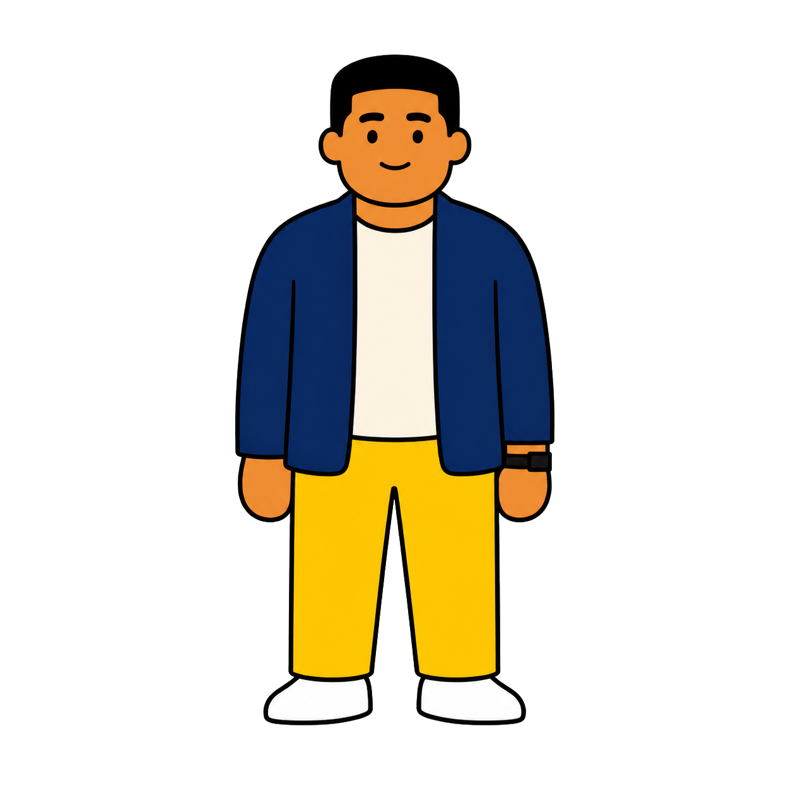

正在加载  LINGOSTORY · CHARACTER PROFILE Cyrus Senior executive at a large technology company 进入专属故事 → 查看其他角色
01 PLAYER ROLE · 你的身份 你在故事里是谁？ 专属故事确定后，这里会显示你与角色相遇时的身份。 Your role will appear when this character's story is ready.